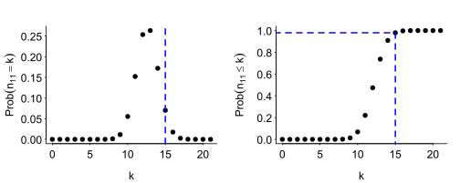
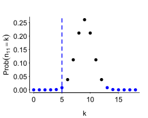
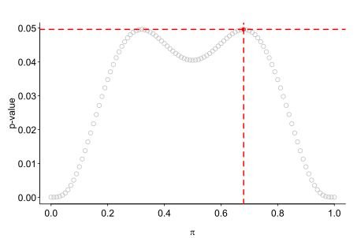

Exact significance tests for 2 × 2 tables
R
significance
Two-by-two contingency tables look so simple that you’d be forgiven for thinking they’re straightforward to analyse. A glance at the statistical literature on the analysis of contingency tables, however, reveals a plethora of techniques and controversies surrounding them that will quickly disabuse you of this notion (see, for instance, Fagerland et al. 2017). In this blog post, I discuss a handful of different study designs that give rise to two-by-two tables and present a few exact significance tests that can be applied to these tables. A more exhaustive overview can be found in Fagerland et al. (2017).
Preliminaries
Two-by-two contingency tables
Two-by-two contingency tables arise when cross-tabulate obserations that have two binary properties (\(X\): \(x_1\) vs. \(x_2\); \(Y\): \(y_1\) vs. \(y_2\)). The number of obervations for which \(X = x_1\) and \(Y = y_1\) is referred to as \(n_{11}\), and similarly for the other combinations of \(X\) and \(Y\) values. We further define the row totals \(n_{1+} := n_{11} + n_{12}\) and \(n_{2+} := n_{21} + n_{22}\) as well as the column totals \(n_{+1} := n_{11} + n_{21}\) and \(n_{+2} := n_{12} + n_{22}\). We call the total number of observations \(n_{++}\).
\[\begin{array}{l|c|c||c} & Y = y_1 & Y = y_2 & \textrm{Row total} \\ \hline X = x_1 & n_{11} & n_{12} & n_{1+} \\ X = x_2 & n_{21} & n_{22} & n_{2+} \\ \hline \textrm{Column total} & n_{+1} & n_{+2} & n_{++} \\ \end{array}\]Exact and approximate tests
This blog post is about exact significance tests. An exact test has the following defining property: If the null hypothesis is true, the \(p\)-value that the test yields is a random variable \(P\) with the property that \[\mathbb{P}(P \leq \alpha) \leq \alpha\] for each \(\alpha \in (0, 1)\). This means that, if the null hypothesis is true, there is at most a 5% probability that the test will yield a \(p\)-value of 0.05 or below. Similarly, if the null hypothesis is true, there is at most a 20% probability that the test will yield a \(p\)-value of 0.20 or below, and so for all values between 0 and 1. Ideally, \(\mathbb{P}(P \leq \alpha)\) should be close to, but no larger than, \(\alpha\): If \(\mathbb{P}(P \leq \alpha)\) tends to be considerably lower than \(\alpha\), i.e., if the test is conservative, this will negatively affect the test’s power.
Tests that aren’t exact can still be approximate. A possible problem with approximate tests is that their justification depends on results derived for large samples; for smaller samples, \(\mathbb{P}(P \leq \alpha)\) may be substantially larger than \(\alpha\). The best-known approximate test used for the analysis of two-by-two contingency tables is Pearson’s \(\chi^2\)-test.
Contingency tables with both marginals fixed
Two-by-two contingency tables can be the result of different research designs – some fairly common, others exceedingly rare.
Example 1 (Fisher’s exact test, one-sided). Say we want to establish if a learner of English is able to tell the /æ/ phoneme in bat and the /ɛ/ phoneme in bet apart. To this end, we make 35 recordings, 21 of which contain the word bet and 14 contain the word bat. The learner is then asked to identify those 21 audio files that he thinks are recordings of bet; the remaining 14 audio files are suspected recordings of bat. The results are summarised in the following contingency table:
\[\begin{array}{l|cc} & \textrm{Categorised as \textit{bet}} & \textrm{Categorised as \textit{bat}} \\ \hline \textrm{Is \textit{bet}} & 15 & 6 \\ \textrm{Is \textit{bat}} & 6 & 8 \\ \end{array}\]Note that we insisted that the learner select exactly 21 suspected recordings of bet, no more and no fewer. As a result, the column total \(n_{+1}\) was known in advance. Moreover, we knew beforehand that 21 of the recordings actually featured bet and 14 of the recordings actually featured bat. Hence, the row totals \(n_{1+}, n_{2+}\) were also known in advance. As a result, \(n_{++}\) and \(n_{+2}\) were also known in advance. Consequently, this study design fixes both the row and column marginals. What wasn’t known in advance was the number of suspected bet recordings that actually were bet recordings (\(n_{11}\)).
The null hypothesis in this setting is that the learner is incapable of distinguishing bet from bat recordings and just selected 21 random audio files as suspected bet recordings in order to comply with the instructions. Under this null hypothesis, the top left entry in the contingency table (\(n_{11}\)) follows a hypergeometric distribution with parameters \(n_{1+} = 21, n_{2+} = 14\) and \(n_{+1} = 21\). (Different authors parametrise this distribution differently; I use the parametrisation that’s used in R.) That is,
\[H_0 : n_{11} \sim \textrm{Hypergeometric}(\underbrace{21}_{\textrm{is bet}}, \underbrace{14}_{\textrm{is bat}}, \underbrace{21}_{\textrm{to be categorised as bet}}).\]
Figure 1 shows the probability mass and cumulative probability functions of the \(\textrm{Hypergeometric}(21, 14, 21)\) distribution. The observed top-left entry, i.e., 15, is highlighted in blue.
If the learner did not just pick 21 audio files at random but was in fact able to tell bet and bat recordings apart to some degree, this top-left entry can be expected to be large as opposed to small. This means that we want to compute a right-sided \(p\)-value, which we do by calculating
\[\mathbb{P}(n_{11} \geq 15) = 1 - \mathbb{P}(n_{11} \leq 14):\]
1 - phyper(15 - 1, 21, 14, 21)[1] 0.09059986This computation amounts to running Fisher’s exact test:
tab <- rbind(c(15, 6), c(6, 8))
fisher.test(tab, alternative = "greater")$p.value[1] 0.09059986Example 2 (Fisher’s exact test, two-sided). Let’s slightly change the design of the study in Example 1. Instead of recording bet 21 times and bat 14 times and asking the learner to select 21 suspected bet recordings, we record both bet and bat 18 times and ask the learner to select 18 suspected bet recordings. The results are summarised in the following contingency table:
\[\begin{array}{l|cc} & \textrm{Categorised as \textit{bet}} & \textrm{Categorised as \textit{bat}} \\ \hline \textrm{Is \textit{bet}} & 5 & 13 \\ \textrm{Is \textit{bat}} & 13 & 5 \\ \end{array}\]Under the null hypothesis that the learner possesses no relevant discriminatory ability, the top-left entry (\(n_{11}\)) follows a \(\textrm{Hypergeometric}(18, 18, 18)\) distribution; see Figure 2. The observed top-left entry (5) is highlighted by the dashed blue line.

Of note, the learner seems to be able to tell bet and bat apart to some extent – it’s just that he seems to identify bet recordings as bat and vice versa. Since we’re interested in the learner’s discriminatory ability, regardless of whether he is then also able to correctly label the two categories, we want to compute a two-sided \(p\)-value. The most common way to do so is to sum the probability masses \(\mathbb{P}(n_{11} = k), k = 1, \dots, n_{+1},\) that are no greater than the probability mass of the actually observed top-left entry. These are the probability masses coloured blue in Figure 2.
p_k <- dhyper(0:18, 18, 18, 18)
sum(p_k[p_k <= dhyper(5, 18, 18, 18)])[1] 0.01839395Fisher’s exact test carries out the same computation.
tab <- rbind(c(5, 13), c(13, 5))
fisher.test(tab)$p.value[1] 0.01839395Contingency tables with one marginal fixed
Contingency tables in which both the row and column marginals are fixed in advance are a rare sight. More common in some areas of research are contingency tables where only the row marginals are fixed by design. Such tables can be found in, for instance, experimental research in which a fixed number of participants are assigned to one experimental condition and another fixed number of participants are assigned to the other experimental condition and where for each participant, we have a single binary outcome (e.g., died vs. survived, or passed vs. failed).
Example 3 (Boschloo’s test). Let’s imagine we’re in charge of an agency that designs self-study courses to help students prepare for an entrance exam. We’ve developed a course whose efficacy we want to compare against that of its predecessor. More specifically, we’re interested in finding out whether the new course is better than the old one in terms of helping the students pass the entrance exam. We recruit 24 students willing to participate in an evaluation study and, using complete randomisation, we assign 12 of them to work with the new course and 12 to work with the old one. The results look as follows:
\[\begin{array}{l|cc} & \textrm{Pass} & \textrm{Fail} \\ \hline \textrm{New course} & 10 & 2 \\ \textrm{Old course} & 6 & 6 \\ \end{array}\]In contrast to the previous two examples, it’s only the row marginals that were known beforehand in this example. Nevertheless, applying Fisher’s exact test to this contingency table is reasonable. In doing so, we would be conditioning the analysis on the observed column marginals (\(n_{+1} = 16\), \(n_{+2} = 8\)), even though the study design did not fix these marginals. The corresponding null hypothesis is
\[H_0 | n_{+1} = 16, n_{+2} = 8~:~ n_{11} \sim \textrm{Hypergeometric}(12, 12, 16).\]
An exact test remains exact when it is used conditionally (Lydersen 2009:1165), so the resulting \(p\)-value is perfectly valid:
tab <- rbind(c(10, 2), c(6, 6))
fisher.test(tab, alternative = "greater")$p.value[1] 0.09651366That said, conditional exact tests tend to be pretty conservative. Intuitively, the reason is that the conditional exact test only considers \(\min(n_{+1}, n_{1+}) + 1\) of the possible tables that could have been observed under the null hypothesis; in this example, these would be the thirteen different tables where \(n_{1+} = n_{2+} = 12\) and \(n_{+1} = 16\), i.e., with \(n_{11} = 0, 1, \dots, 12\). The actual sample space under the null hypothesis in this design, however, comprises \((n_{1+} + 1) \cdot (n_{2+} + 1)\) tables. In this example, these would be the 169 different tables where \(n_{1+} = n_{2+} = 12\). By only considering a small part of the sample space, the conditional exact test in essence misses out on opportunities to return small \(p\)-values.
Unconditional exact tests consider the whole sample space and are consequently less conservative than conditional exact tests. The contingency table in the fixed row marginals design can be considered the result of two draws from binomial distributions: one with \(n_{1+}\) attempts and success probability \(\pi_1\), and one with \(n_{2+}\) attempts and success probability \(\pi_2\). The null hypothesis is that \(\pi_1 = \pi_2\). That is, \[\begin{align*} H_0~:~ & n_{11} \sim \textrm{Binomial}(n_{1+}, \pi), \\ & n_{21} \sim \textrm{Binomial}(n_{2+}, \pi), \end{align*}\] with some \(\pi \in [0,1]\) that is common to both binomial distributions. This \(\pi\) parameter is known as a nuisance parameter: its value is unknown and not of primary interest, but if we want to carry out an unconditional test, we need to somehow take it into account.
An unconditional exact test for the fixed row marginals design that is often recommended is Boschloo’s test (Boschloo 1970). The idea behind this test is as follows. First, we define a test statistic that captures the extent to which observed contingency tables differ from the contingency table you’d expect to find under the null hypothesis, given \(n_{1+}\), \(n_{2+}\) and some candidate value for \(\pi\). Second, for each table that we could have observed, we compute both how likely it was to occur (this depends on \(n_{1+}\), \(n_{2+}\) and \(\pi\)) and the test statistic it would have resulted in. Third, using the results of these calculations, we compute the probability that we would observe a test statistic at least as extreme as the test statistic that we actually did observe under the null hypothesis and for the given \(n_{1+}, n_{2+}\) and \(\pi\) values. This probability is a \(p\)-value conditional on the \(\pi\) value considered. We repeat this procedure for different \(\pi\) values – say, for 101 equally spaced \(\pi\) values in the interval \([0, 1]\). Our unconditional exact \(p\)-value is now the maximum of the 101 values so computed. (Theoretically, it should be the supremum of the \(p\)-values when varying \(\pi\) over the entire \([0,1]\) interval. But the maximum of the 101 \(p\)-values compute will be close enough to this supremum.) In Boschloo’s test, the test statistic used is in fact the one-sided \(p\)-value obtained from Fisher’s exact test. But this \(p\)-value is used as a test statistic, not as a \(p\)-value in its own right.
Let’s walk through the computation step by step. First, we run a one-sided Fisher’s exact test in order to obtain the observed test statistic:
(obs_test_stat <- fisher.test(rbind(c(10, 2), c(6, 6)), alternative = "greater")$p.value)[1] 0.09651366Next, we create a grid with all possible combinations of \((n_{11}, n_{21})\) entries that we could have observed:
n_row1 <- 12
n_row2 <- 12
tables <- expand.grid(n11 = 0:n_row1, n21 = 0:n_row2)We now fix some \(\pi \in [0, 1]\), for instance, \(\pi = 0.43\). For each possible table, we compute how likely it would have been to observe this table if \(\pi = 0.43\). For instance, the 61st row in the grid corresponds to the table
\[\begin{array}{l|cc} & \textrm{Pass} & \textrm{Fail} \\ \hline \textrm{New course} & 8 & 4 \\ \textrm{Old course} & 6 & 6 \\ \end{array}\]The probability of observing the first row is given by the probability mass of \(k = 8\) under a Binomial(12, 0.43) distribution; the probability of observing the second row is given by the probability mass of \(k = 6\), also under a Binomial(12, 0.43) distribution. So the probability of observing this table is the product of these two probabilities:
dbinom(8, 12, 0.43) * dbinom(6, 12, 0.43)[1] 0.01223444We compute this probability for all 169 tables:
tables$probability <- dbinom(tables$n11, 12, 0.43) * dbinom(tables$n21, 12, 0.43)For each table, we also compute the test statistic:
tables$test_statistic <- NA
for (i in 1:nrow(tables)) {
current_table <- rbind(c(tables$n11[i], 12 - tables$n11[i]),
c(tables$n21[i], 12 - tables$n21[i]))
tables$test_statistic[i] <- fisher.test(current_table, alternative = "greater")$p.value
}We can now compute the probability that we’d observe a test statistic at least as extreme as the test statistic associated with the table we actually observed, assuming the null hypothesis is true and \(\pi = 0.43\). Since the \(p\)-value produced by Fisher’s exact test is smaller for tables that are more surprising under the null hypothesis, ‘at least as extreme’ corresponds to ‘at most as large’. We can compute the figure we’re interested in by computing the proportion of tables resulting in test statistics no larger than the one we observed but weighted by their probability of occurring under the assumption that \(\pi = 0.43\):
weighted.mean(tables$test_statistic <= obs_test_stat, w = tables$probability)[1] 0.04312598Assuming \(\pi = 0.43\), the resulting \(p\)-value is hence \(0.043\). We repeat this procedure for different candidate values of \(\pi\). The \(p\)-value of Boschloo’s test is then the maximum of the resulting \(p\)-values. In this specific example, the maximum \(p\)-value is \(p = 0.0495\), which is obtained for \(\pi = 0.68\); see Figure 3.

If our alternative hypothesis were that the new programme produced worse results than the old one, we’d have used the left-sided \(p\)-value of Fisher’s exact test as the test statistic in Boschloo’s procedure. A two-sided \(p\)-value can be obtained by carrying out Boschloo’s test once using the right-sided \(p\)-value of Fisher’s exact test as the test statistic and once using the left-sided \(p\)-value, and then doubling the smaller of the two resulting \(p\)-values.
To run Boschloo’s test, you can use the following boschloo_test() function:
boschloo_test <- function(tab, alternative = "two.sided", pi_range = c(0, 1), stepsize = 0.01) {
# This test assumes fixed row sums.
# Nuisance parameter values in the interval pi_range are tried out.
# stepsize governs granularity of search through nuisance parameter value candidates.
if (!all(dim(tab) == c(2, 2))) stop("tab needs to be a 2*2 contingency table.")
if (alternative == "two.sided") {
# Truncate two-sided p-value at 1
return(
min(2 * min(boschloo_test(tab, alternative = "less", pi_range = pi_range, stepsize = stepsize),
boschloo_test(tab, alternative = "greater", pi_range = pi_range, stepsize = stepsize)),
1)
)
}
# Use Fisher's exact test p-value as test statistic
statistic <- function(x) fisher.test(x, alternative = alternative)$p.value
# Construct grid with possible results
row_sums <- rowSums(tab)
my_grid <- expand.grid(n1 = 0:row_sums[1], n2 = 0:row_sums[2])
my_grid$statistic <- NA
for (i in 1:nrow(my_grid)) {
my_tab <- rbind(c(my_grid$n1[i], row_sums[1] - my_grid$n1[i]),
c(my_grid$n2[i], row_sums[2] - my_grid$n2[i]))
my_grid$statistic[i] <- statistic(my_tab)
}
# Compute observed test statistic
obs_p <- statistic(tab)
is_extreme <- my_grid$statistic <= obs_p
# Maximise p-value over range
pis <- seq(pi_range[1], pi_range[2], by = stepsize)
max_p <- 0
for (current_pi in pis) {
current_p <- weighted.mean(x = is_extreme,
w = dbinom(my_grid$n1, row_sums[1], current_pi) *
dbinom(my_grid$n2, row_sums[2], current_pi))
if (current_p > max_p) max_p <- current_p
}
max_p
}It works like so:
boschloo_test(tab = tab, alternative = "greater")[1] 0.04954898Alternatively, you can use the boschloo() function in the exact2x2 package. See ?boschloo for details on the parameters. Here I specify the number of grid points (nPgrid) in order to make the results agree exactly with those produced by boschloo_test():
exact2x2::boschloo(6, 12, 10, 12, alternative = "greater",
control = exact2x2::ucControl(nPgrid = 101))$p.value[1] 0.04954898Contingency tables with only the total sum fixed
A third possibility is that neither the row sums (\(n_{1+}, n_{2+}\)) nor the column sums (\(n_{+1}, n_{+2}\)) are known beforehand but that the total number of observations (\(n_{++}\)) is. One general case where such contingency tables arise is in observational research in which two binary features are measured in a fixed number of randomly sampled units. A second general case is comprised of experiments that have a binary outcome variable and in which the participants are assigned to the conditions using simple randomisation so that the precise number of participants isn’t fixed in advance.
Observational studies
Example 4 (Boschloo’s test). During a hike through the Fribourg Prealpes near Schwarzsee, we conduct a linguistic field experiment. Any time we encounter a hiking party chatting in French, we greet them in German; any time we encounter a hiking party chatting in German, we greet them in French. Afterwards, we jot down for each party whether the first person greeting us back did so in the same language in which they were addressed or in a different language. (Parties not chatting in French or German are ignored in this field experiment.) We planned to continue the field experiment until we’ve encountered the 20th French- or German-speaking hiking party. Here’s the resulting contingency table:
\[\begin{array}{l|cc} & \textrm{Same language} & \textrm{Different language} \\ \hline \textrm{French-speaking party} & 2 & 6 \\ \textrm{German-speaking party} & 8 & 4 \\ \end{array}\]Note that only the total number of observations (\(n_{++} = 20\)) was known beforehand.
The null hypothesis is that whether the first greeter in the party responded in the same language or in a different language is independent of the language in which the party was chatting. More formally, let \(\pi_{\textrm{row}}\) be the probability that a randomly encountered French- or German-speaking party is French-speaking and let \(\pi_{\textrm{col}}\) be the probability that the first greeter in a French- or German-speaking party responds in the same language. Then our null hypothesis is
\[\begin{align*} H_0~:~&\mathbb{P}(\textrm{is French-speaking and responds in same language}) = \pi_{\textrm{row}}\pi_{\textrm{col}}, \\ &\mathbb{P}(\textrm{is French-speaking and responds in different language}) = \pi_{\textrm{row}}(1-\pi_{\textrm{col}}), \\ &\mathbb{P}(\textrm{is German-speaking and responds in same language}) = (1-\pi_{\textrm{row}})\pi_{\textrm{col}}, \\ &\mathbb{P}(\textrm{is German-speaking and responds in different language}) = (1-\pi_{\textrm{row}})(1-\pi_{\textrm{col}}). \end{align*}\]
More compactly, our null hypothesis is that the tuple \((n_{11}, n_{12}, n_{21}, n_{22})\) is multinomially distributed with the probabilities above, i.e.,
\[H_0~:~(n_{11}, n_{12}, n_{21}, n_{22}) \sim \textrm{Multinomial}(20, \pi_{\textrm{row}}\pi_{\textrm{col}},\pi_{\textrm{row}}(1-\pi_{\textrm{col}}),(1-\pi_{\textrm{row}})\pi_{\textrm{col}}, (1-\pi_{\textrm{row}})(1-\pi_{\textrm{col}})),\] for some unknown \(\pi_{\textrm{row}}, \pi_{\textrm{col}} \in [0,1]\).
In terms of the analysis, we could condition on both marginals or on one of them and run Fisher’s or Boschloo’s test, respectively:
tab <- rbind(c(2, 6), c(8, 4))
# Condition on both marginals
fisher.test(tab)$p.value[1] 0.1698023# Condition on row marginals only
boschloo_test(tab)[1] 0.08332351# Condition on column marginals only
boschloo_test(t(tab))[1] 0.08940788The resulting \(p\)-values are all valid. But like before, these tests only consider a part of the sample space: Fisher’s exact test only takes into account the nine tables where \(n_{1+} = 8\) and \(n_{+1} = 10\); Boschloo’s test considers the \(9 \cdot 13 = 117\) tables where \(n_{1+} = 8\) and \(n_{2+} = 12\) when conditioning on the row marginals and the \(11 \cdot 11 = 121\) tables where \(n_{+1} = n_{+2} = 10\) when conditioning on the column marginals. But the table observed is in actual fact one of \[\sum_{i = 0}^{20}\sum_{j = 0}^{20-i}\sum_{k= 0}^{20-i-j}1 = 1771\] tables where \(n_{++} = 20\).
One possible solution is to generalise Boschloo’s test to two nuisance parameters. That is, rather computing a \(p\)-value for each candidate value of \(\pi \in [0,1]\) and then taking the maximum, we compute a \(p\)-value for each pair of candidate values of \((\pi_{\textrm{row}}, \pi_{\textrm{col}}) \in [0,1] \times [0,1]\). The unconditional_test() function defined below carries out this procedure:
unconditional_test <- function(
tab,
alternative = "two.sided",
pi_range_row = c(0, 1),
pi_range_col = c(0, 1),
stepsize = 0.01)
{
# This test assumes a fixed total sum.
# Nuisance parameter values in the rectangle pi_range_row * pi_range_col are tried out.
# stepsize governs granularity of search through nuisance parameter value candidates.
if (!all(dim(tab) == c(2, 2))) stop("tab needs to be a 2*2 contingency table.")
if (alternative == "two.sided") {
# Truncate two-sided p-value at 1
return(min(
2 * min(unconditional_test(tab, alternative = "less", stepsize = stepsize),
unconditional_test(tab, alternative = "greater", stepsize = stepsize)),
1))
}
# Use Fisher's exact test p-value as test statistic
statistic <- function(x) fisher.test(x, alternative = alternative)$p.value
# Helper function for multinomial weights
weights <- function(pi_row, pi_col, n11, n12, n21, n22) {
total_sum <- n11 + n12 + n21 + n22
(pi_row*pi_col)^n11 * (pi_row * (1 - pi_col))^n12 *
((1 - pi_row)*pi_col)^n21 * ((1 - pi_row)*(1 - pi_col))^n22 *
factorial(total_sum)/(factorial(n11) * factorial(n12) * factorial(n21) * factorial(n22))
}
# Construct grid with possible results
total_sum <- sum(tab)
my_grid <- expand.grid(n11 = 0:total_sum,
n12 = 0:total_sum,
n21 = 0:total_sum)
my_grid$n22 <- total_sum - my_grid$n11 - my_grid$n12 - my_grid$n21
my_grid <- subset(my_grid, n22 >= 0)
my_grid$statistic <- NA
for (i in 1:nrow(my_grid)) {
my_tab <- rbind(c(my_grid$n11[i], my_grid$n12[i]),
c(my_grid$n21[i], my_grid$n22[i]))
my_grid$statistic[i] <- statistic(my_tab)
}
my_grid$statistic[is.na(my_grid$statistic)] <- 1
# Compute observed test statistic
obs_p <- statistic(tab)
is_lower <- my_grid$statistic <= obs_p
# Maximise p value over grid
pis <- expand.grid(
pi_row = seq(pi_range_row[1], pi_range_row[2], by = stepsize),
pi_col = seq(pi_range_col[1], pi_range_col[2], by = stepsize)
)
max_p <- 0
for (i in 1:nrow(pis)) {
w <- weights(pis$pi_row[i], pis$pi_col[i],
my_grid$n11, my_grid$n12, my_grid$n21, my_grid$n22)
current_p <- weighted.mean(is_lower, w = w)
if (current_p > max_p) max_p <- current_p
}
max_p
}While it takes noticeably longer to run this test, it should be a bit more powerful than the tests that condition on one or both marginals:
unconditional_test(tab)[1] 0.07722463The exact.test() function in the Exact also implements this procedure. For one-sided tests (i.e., alternative = "less" or "greater"), it produces the same \(p\)-values as unconditional_test(), but it computes the two-sided \(p\)-value differently:
Exact::exact.test(tab, model = "multinomial",
npNumber = 101, ref.pvalue = FALSE, method = "boschloo")$p.value[1] 0.1139588Experiments with simple randomisation
Example 5 (Boschloo’s test). We conduct the same experiment as in Example 3, but with one change: We assign the participants to the conditions using simple randomisation rather than using complete randomisation. Hence, we’re not guaranteed to have exactly 12 participants in each condition, and the row marginals aren’t fixed in advance. For the sake of comparison, let’s assume we obtain the same results as in Example 3:
\[\begin{array}{l|cc} & \textrm{Pass} & \textrm{Fail} \\ \hline \textrm{New course} & 10 & 2 \\ \textrm{Old course} & 6 & 6 \\ \end{array}\]We could again condition on the row marginals:
tab <- rbind(c(10, 2),
c(6, 6))
boschloo_test(tab, alternative = "greater") # condition on row marginals[1] 0.04954898Alternatively, we could run an unconditional test. Note, however that while \(n_{1+}\) and \(n_{2+}\) weren’t fixed by design, \(\pi_{\textrm{row}}\) is known to be \(0.5\). Hence, we don’t need to iterate through different candidate values for \(\pi_{\textrm{row}}\):
unconditional_test(tab, alternative = "greater", pi_range_row = c(0.5, 0.5))[1] 0.04392337Contingency tables with nothing fixed
Contingency tables where not even \(n_{++}\) is fixed are mentioned by Fagerland et al. (2017) but not discussed in any detail. An analysis that conditions on the observed \(n_{++}\) seems reasonable.
References
Boschloo, R. D. 1970. Raised conditional level of significance for the 2 × 2 table when testing the equality of two probabilities. Statistica Neerlandica 24. 1-35.
Fagerland, Morten W., Stian Lydersen & Petter Laake. 2017. Statistical analysis of contingency tables. Boca Raton, FL: Chapman and Hall/CRC.
Lydersen, Stian, Morten W. Fagerland & Petter Laake. 2009. Recommended tests for association in 2 × 2 tables. Statistics in Medicine 28. 1159-1175.